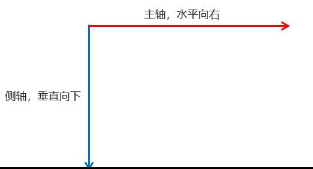

Flex 布局
flex布局¶
什么是Flexbox
Flexbox 是一种在 CSS 中布局元素的方式，分为两个主要组件，分别是弹性容器（flexbox container）和弹性项目(flexbox items)。
flexbox 容器是包含所有 flexbox 项作为其子项的父元素。它是你定义所有关于 flexbox 布局属性的地方，你也可以对单个项目进行额外的调整。
让我们看一下如何实现一个简单的 flexbox 示例。如果我们有一个包含子元素的元素，我们需要做的就是将父元素的 display 属性设置为 flex，这样就会拥有一个 flex 容器。
display：flex
正如你在默认情况下看到的，当我们在元素上指定display:flex时，我们将该元素设置为 flex 容器。该元素中的所有直接子元素都被视为弹性项目。默认情况下，如果你未指定其他属性，则 flex 项目将从左到右排列在一行上，仅占用所需的空间。如果项目会溢出，它们也会自动缩小以适应 flex 容器。
这是 flexbox 的基础核心，它本身作用并不强，所以接下来我们需要讨论如何处理容器中项目的布局。
flex布局原理¶
- flex 是 flexible Box 的缩写，意为"弹性布局"，用来为盒状模型提供最大的灵活性，任何一个容器都可以指定为 flex 布局。
- 当我们为父盒子设为 flex 布局以后，子元素的 float、clear 和 vertical-align 属性将失效。
- flex布局又叫伸缩布局 、弹性布局 、伸缩盒布局 、弹性盒布局
- 采用 Flex 布局的元素，称为 Flex 容器（flex container），简称"容器"。它的所有子元素自动成为容器成员，称为 Flex 项目（flex item），简称"项目"。
总结：就是通过给父盒子添加flex属性，来控制子盒子的位置和排列方式
Flexbox 是第一个与普通 CSS 完全不同方式工作的 CSS 布局方法。不用担心块/内联元素， flexbox 担心主轴和交叉轴。
默认情况下，主轴（以绿色显示）水平穿过容器，而横轴垂直。这意味着任何处理主轴的布局方法都会水平布局元素，而横轴会垂直布局元素。让我们先看看如何沿主轴布局元素。
父项常见属性¶
- flex-direction：设置主轴的方向
- justify-content：设置主轴上的子元素排列方式
- flex-wrap：设置子元素是否换行
- align-content：设置侧轴上的子元素的排列方式（多行）
- align-items：设置侧轴上的子元素排列方式（单行）
- flex-flow：复合属性，相当于同时设置了 flex-direction 和 flex-wrap
justify-content¶
justify-content 设置主轴上的子元素排列方式
对于下方所有示例，我们将假设 flex-items 的宽度为 20%。
<!DOCTYPE html>
<html lang="en">
<head>
<meta charset="UTF-8">
<title>flex-direction</title>
<style>
.flex-container {
display: flex;
border: 1px dashed black;
justify-content: flex-start;
}
.flex-item {
width: 20%;
height: 10rem;
background-color: cyan;
border: 1px solid black;
}
</style>
</head>
<body>
<div class="flex-container">
<div class="flex-item">1</div>
<div class="flex-item">2</div>
<div class="flex-item">3</div>
</div>
</body>
</html>
1、flex-start（默认）
将所有项目放置在主轴的起点，默认情况下是轴的左侧。这也是 justify-content 的默认行为。
.flex-container {
display: flex;
justify-content: flex-start;
}
2、flex-end
将所有项目放置在主轴的末端，默认情况下是轴的右侧。
.flex-container {
display: flex;
justify-content: flex-end;
}
3、center
将所有项目放置在主轴的中心。这是在 CSS 中居中元素的最简单方法之一。
.flex-container {
display: flex;
justify-content: center;
}
4、space-between
这会占用容器内的所有额外空间，并将其均匀分布在每个元素之间，以在填充整个容器的同时将它们彼此间隔得尽可能远。
.flex-container {
display: flex;
justify-content: space-between;
}
5、space-around
这与 space-between非常相似，但它也在容器外部和第一个/最后一个元素之间增加了空间。容器外部和第一个/最后一个元素之间的空间量正好是元素之间空间量的一半。
.flex-container {
display: flex;
justify-content: space-around;
}
| 属性名 | 效果 |
|---|---|
| flex-start | 默认值从头部开始如果主轴是x轴，则从左到右 |
| flex-end | 从尾部开始排列 |
| center | 在主轴居中对齐(如果主轴是x轴则水平居中) |
| space-around | 平分剩余空间 |
| space-between | 先两边贴边再平分剩余空间(重要) |
align-items¶
align-items 设置侧轴上的子元素排列方式（单行 ）
该属性是控制子项在侧轴（默认是y轴）上的排列方式 在子项为单项（单行）的时候使用
对于下方这些示例，我们将假设 flex-items 的宽度均为 20%，但元素的高度都不同。
.flex-item {
width: 20%;
}
.flex-item:nth-child(1) {
height: 75px;
}
.flex-item:nth-child(2) {
height: 100px;
}
.flex-item:nth-child(3) {
height: 125px;
}
1、stretch(默认）
这将拉伸所有项目以填充横轴的整个高度，除非它们设置了特定的高度。在我们的示例中，我将第一个子元素的高度设置为初始值，这与我们从未在第一个孩子上设置高度基本相同。默认情况下，当 div 没有高度时，它只是其中内容的高度，但是正如你在下面看到的，第一个子项填充了容器的整个高度，因为它正在拉伸以填充整个高度。但是，第二个元素没有拉伸，因为我们在其上设置了 100px 的特定高度。**stretch**是 align-items 的默认行为。
.flex-container { display: flex; align-items: stretch;}.flex-item:nth-child(1) { /* 这就像我们没有设置高度一样 */ height: initial;}
2、flex-start
这与 justify-content 的 flex-start 的工作原理相同，但默认情况下将从交叉轴的顶部开始。
.flex-container { display: flex; align-items: flex-start;}
3、flex-end
这与 justify-content 的 flex-end 的工作原理相同，但默认情况下将从交叉轴的底部开始。
.flex-container { display: flex; align-items: flex-end;}
| 属性名 | 效果 |
|---|---|
| flex-start | 默认值从头部开始如果主轴是x轴，则从左到右 |
| flex-end | 从尾部开始排列 |
| center | 在主轴居中对齐(如果主轴是x轴则水平居中) |
| stretch | 拉伸 |
4、center
这与 justify-content 的 center相同，但将基于交叉轴居中。
.flex-container { display: flex; align-items: center;}
上方内容已经涵盖了沿主轴和交叉轴布置元素的所有方式，但是关于 flexbox 轴，你还需要了解一件更重要的事情。它们实际上可以互换。有一个叫做 flex-direction 的属性，它决定了主轴和交叉轴的方向。
flex-direction¶
flex-direction设置主轴的方向，此属性允许我们确定每个轴对应的方向以及轴的起点。
在 flex 布局中，是分为主轴和侧轴两个方向，同样的叫法有 ： 行和列、x 轴和y 轴
默认主轴方向就是 x 轴方向，水平向右
默认侧轴方向就是 y 轴方向，水平向下

注意： 主轴和侧轴是会变化的，就看 flex-direction 设置谁为主轴，剩下的就是侧轴。而我们的子元素是跟着主轴来排列的
1、row(默认)
默认方向是行。这意味着主轴是水平的，而横轴是垂直的。这也意味着主轴从左侧开始，而横轴从顶部开始。
.flex-container { display: flex; flex-direction: row; justify-content: flex-start; align-items: flex-start;}
2、row-reverse
与 row 类似，我们有 row-reverse。该方向不会交换主轴/交叉轴，但会交换主轴开始的位置。主轴现在从右边开始，而横轴没有改变，仍然从顶部开始。你将在下面看到我们的项目从容器的右侧开始并从右到左排列，因为我们使用的是相反的顺序。
.flex-container { display: flex; flex-direction: row-reverse; justify-content: flex-start; align-items: flex-start;}
3、column
列方向完全交换了我们的轴，所以现在主轴是垂直的，横轴是水平的。这意味着，如果你使用 justify-content，你将在垂直方向布置元素，而 align-items 将在水平方向工作。
.flex-container { display: flex; flex-direction: column; justify-content: flex-start; align-items: center;}

4、column-reverse
column-reverse 方向与 column 基本相同，但它反转了主轴的方向，因此现在项目从容器的底部开始。
.flex-container { display: flex; flex-direction: column-reverse; justify-content: flex-start; align-items: center;}
刚刚我们介绍了很多与布局相关的内容，但实际上你需要了解的主要内容是 justify-content、align-items、flex-direction 以及它们中的每一个是如何影响主轴/横轴。
到目前为止，我们涵盖的所有内容都必须处理整个 flex 容器的布局。不过，我们实际上可以更进一步， flex 容器中的每个项目都有特定的布局，这是通过 align-self 属性完成的。
.flex-container { display: flex; align-items: flex-start;}.flex-item:nth-child(1) { align-self: flex-end;}
正如你从上面的例子中看到的，我们将第一个子元素的 align-self 属性设置为 flex-end 并且它现在在我们的交叉轴的底部对齐，即使整个 flex 容器有一个 align-items：flex-start。
此 align-self 属性可与任何 align-items 值一起使用，以将每个项目准确放置在容器中你想要的位置。
但是，需要注意的一件重要事情是，没有justify-self方法，因为这是由父容器负责。

调整 Flex Item的大小¶
现在我们来到了 flexbox 中最令人困惑的部分，即单个项目的大小调整。
flexbox 的真正威力不在于它的布局属性（尽管这些属性很棒），而在于它能够根据页面上其他元素的大小调整项目的大小。这是通过 3 个不同的属性 flex-grow、flex-shrink 和 flex-basis 完成的。首先谈谈 flex-grow 因为它是你使用的最常见的属性。
一、flex-grow¶
flex-grow 属性是你在 flex 项目上定义的一个属性，它告诉项目该项目允许占用多少额外空间来填充其容器。默认情况下，此属性设置为 0，这意味着该项目不会获得任何额外空间。让我们首先看一个 flex 容器中没有任何项目设置了 flex-grow的情况 。

如你所见，每个项目仅占用其宽度，容器中的其余空间未填充。这是 flexbox 的默认行为，但如果你希望一个或多个项目填充剩余空间，则需要 flex-grow。
.flex-item:nth-child(2) { flex-grow: 1;}
通过将 flex-grow 设置为 1，我们告诉第二个元素它应该获得额外空间的 1 部分，并且由于没有其他项目具有 flex grow，那么额外空间的 1 部分就是剩余空间的全部。
.flex-item:nth-child(1),.flex-item:nth-child(2) { flex-grow: 1;}
在这个例子中，我们将第一个和第二个元素的 flex-grow 都设置为 1，所以现在这些元素中的每一个都将获得剩余空间的 1 部分。为了确定有多少空间，我们只需将容器中每个项目的所有 flex-grow 数字相加 (1 + 1 = 2)，然后将每个项目的 flex-grow 除以该数字。由于我们对每个项目的 flex-grow 是 1，因此每个项目将获得 剩余空间的½ 。
不过，我们可以通过为某些元素提供或多或少的可用空间来制作更复杂的布局。
.flex-item:nth-child(1) { flex-grow: 2;}.flex-item:nth-child(2) { flex-grow: 1;}
在这个例子中，我们让第一个元素得到剩余空间的 2 部分，而第二个元素只得到 1 部分。当我们做数学运算时，我们会看到第一个元素获得了剩余空间的 ⅔，而第二个元素只获得了剩余空间的 ⅓。
乍一看，你可能认为这段代码是说第一个元素的大小应该是第二个元素的两倍，但 flex grow 只关心在所有元素添加到容器后剩余的空间。由于默认情况下我们的 3 个元素占据了容器大小的 60%，元素之间的剩余空间仅占容器大小的 40%。不过，我们实际上可以通过使用 flex-basis 来修改剩余空间的计算方式
二、flex-basis¶
flex-basis 属性告诉我们的 flex 容器项目在容器中占用了多少空间。默认情况下，它设置为 auto 这意味着它只使用元素的 width 属性来计算它。
.flex-item:nth-child(1) { flex-basis: 40%;}
在上面的代码中，我们将第一个元素的 flex-basis 设置为 40%，所以现在不是占用 20% 的宽度（这是我们定义为元素的宽度），而是占用 40% 容器大小。这现在意味着可以用 flex-grow 进行划分的容器剩余空间更少。
这个属性只有在你想改变 flex 容器中元素的宽度时才有用，以便它们更好地与 flex-grow 配合使用。例如，假设你想在容器中创建 3 个相同大小的元素，但它们的宽度一开始就不同，而你无法更改。
.flex-item { flex-grow: 1;}
你可能认为将 flex-grow 设置为 1 会使它们的大小都相同，但是由于它们以不同的宽度开始，因此它们最终会以不同的宽度结束，因为添加到元素的额外空间量对于每个独立的元素是完全相同的。
要解决这个问题，你需要为所有元素提供相同的 flex-basis，以便它们都以相同的大小开始并以相同的速度增长。通常将使用 0 作为 flex-basis，因为它会确保所有元素始终具有相同的大小，无论它们开始多小/多大。
.flex-item { flex-grow: 1; flex-basis: 0;}
现在我们要讨论的最后一个大小属性是 flex-shrink。
三、flex-shirk¶
本文开头提到如果容器中的 flex 项目溢出容器，它们将自动缩小以填充正确的大小。这是因为默认情况下，所有 flex 项目的 flex-shrink 都设置为 1。
.flex-item { width: 50%;}
即使每个元素应该占容器的 50%，它们也会均匀地缩小，因此每个元素只有容器大小的 33%。如果我们想防止其中一个子元素收缩，我们可以将 flex-shrink 设置为 0。
.flex-item { width: 50%;}.flex-item:nth-child(1) { flex-shrink: 0;}
正如你所看到的，第一个元素保持容器大小的 50% 并且不会缩小，而其他两个元素会缩小以确保所有项目都可以放入容器中。
我们还可以使某些项目比其他项目收缩得更多。
.flex-item { width: 50%;}.flex-item:nth-child(1) { flex-shrink: 2;}
通过将 flex-shrink 设置为 2，第一个元素应该失去溢出空间的 2 部分，而其他两个元素每个只丢失 1 部分，因为它们默认设置 flex-shrink为1。这在比例方面与 flex-grow 完全相同，但 flex-shrink 处理容器外溢出的空间，而 flex-grow 处理容器内剩余的空间。
在大多数情况下，这并不是一个真正需要处理的属性，因为你通常只关心增长的项目，并且溢出时收缩的默认设置通常也是你想要的。
另外，需要注意的一件重要事情是 flex-shrink 非常聪明，它将确保如果你有一个非常大的项目和一个非常小的项目，它们会以一种方式收缩，即大项目收缩得更多，以便小项目不会缩小到消失的地步。
以上是需要了解的有关调整 flex 项目大小的全部信息。
Flex包装¶
flex-wrap 设置是否换行
默认情况下，项目都排在一条线（又称”轴线”）上。flex-wrap属性定义，flex布局中默认是不换行的。
- nowrap 不换行
- wrap 换行
当你在 flexbox 中工作时，通常只处理一行项目，但有时在极少数情况下，当你的项目多于一行时，就可能需要处理 wrapping 包装。
.flex-container { flex-wrap: wrap;}.flex-item { width: 50%;}
由于我们的项目通常有 50% 的宽度，它们会缩小以确保都在一行上，但我们将 flex-wrap 属性设置为 wrap，这意味着如果项目溢出容器，则将其放在新的一行 . 如果你使用 wrap 来确保即使项目列表变得太大，它们仍然看起来不错，这虽然也还好，但是如果你使用 wrap 来创建二维布局，那么使用flexbox 就是错误的。相反，你应该考虑使用 CSS 网格布局。后续也会进行分享！
如果你想阻止 flex 容器包装，只需要将 wrap 属性设置为 nowrap。
.flex-container { flex-wrap: nowrap;}
如果你在列布局中使用 flex-wrap，则项目将换行到新列而不是行上。
.flex-container { flex-direction: column; height: 250px; flex-wrap: wrap;}.flex-item { height: 100px;}
要知道的另一件重要事情是，现在有多个行/列，可以使用 align-content 来布局不同行/列的交互方式。
在普通的 flexbox 布局中，可以使用 justify-content 来分隔主轴上的项目，而 align-content 本质上是相同的，但用于在横轴上分隔元素。此属性仅在 flex-wrap 设置为 wrap 并且内容正在包装时才重要。
例如，在普通的 flexbox 布局中， align-content 属性设置为 normal，这意味着没有设置特定的对齐方式。如果我们愿意，我们可以使用所有可用的花哨对齐方式来对齐 align-content 中的内容。
.flex-container { height: 250px; flex-wrap: wrap; align-content: flex-end;}.flex-item { width: 50%; height: 100px;}
如你所见，所有项目都位于容器底部，即交叉轴的末端。如果我们改用列布局，那么 align-content 将水平放置元素。
.flex-container { flex-direction: column; height: 250px; flex-wrap: wrap; align-content: center;}.flex-item { height: 100px;}
高级Flexbox属性¶
目前分享的内容已经涵盖了 flexbox 的所有基础和进阶属性，现在我想涵盖一些高级/小众的 flexbox 属性。
一、添加间隙¶
到目前为止我们还没有涉及的一件事是能够在 flexbox 容器中的元素之间添加间隙。你可以尝试使用margin/padding来执行此操作，但更简单的方法是使用 gap 属性。此属性将根据我们传递给 gap 的值在每个项目之间添加空间。
.flex-container { gap: 10px;}
正如你所看到的，我们上面的每个项目之间都有 10 px的间隙。这种差距也适用于多行 flex 容器。
.flex-container { flex-direction: column; height: 250px; flex-wrap: wrap; align-content: center; gap: 10px;}.flex-item { height: 100px;}
如你所见，我们的每一行/列都有 10px的间隙。
我们还可以更进一步，仅定义行间距或仅定义列间距。
.flex-container { flex-direction: column; height: 250px; flex-wrap: wrap; align-content: center; row-gap: 10px;}.flex-item { height: 100px;}
.flex-container { flex-direction: column; height: 250px; flex-wrap: wrap; align-content: center; column-gap: 10px;}.flex-item { height: 100px;}
二、元素排序¶
默认情况下，我们可以使用 flex-direction 以正常顺序或相反顺序对元素进行排序，但我们也可以使用 order 属性对单个元素进行排序。
.flex-item:nth-child(1) { order: 2}.flex-item:nth-child(2) { order: 1}.flex-item:nth-child(3) { order: 1}
正如你所看到的，通过指定元素的 order 属性，我们可以确定它们的确切顺序。默认情况下，每个元素的顺序为 0，并且由于 flexbox 将根据它们在 HTML 中的顺序以相同的顺序排列所有元素，你会注意到，如果你不定义任何顺序，所有元素将保持和HTML 相同的顺序 。
在我们的示例中，我们为第一个项目指定了 2 的order，然后为其他两个项目指定了 1 的order。当 flexbox 布局项目时，它从最低的顺序开始，在我们的例子中是 1。由于我们的第二个和第三个元素具有相同的顺序，它们将根据它们的 HTML 顺序进行排序，因此第二个元素将首先出现，而 第三个元素将排在第二位。最后，我们的第一个元素的阶数为 2，比 1 大，因此它将作为我们的最后一个元素。
现在这似乎是一个很酷的技巧，它允许你真正改变页面的工作方式，但建议永远不要使用 order 属性。这样做的原因是它不适用于屏幕阅读器，因为屏幕阅读器总是根据 HTML 顺序阅读。例如在我们上面的场景中，一个人看着屏幕会看到数字的顺序是 2、3、1，而屏幕阅读器会看到它们的顺序是 1、2、3，因为这是它们出现在 HTML 中的顺序 .
三、Flex 简写¶
我们已经讨论了用于调整 flex item 大小的 3 个主要属性，flex-grow、flex-shrink 和 flex-basis。通常你一次只需要定义其中一个，但如果你想一次定义多个，你可以使用定义所有 3 个属性的 flex 简写属性。
.flex-item { flex: 1 0 10px;}
上面的代码是一样的：
.flex-item { flex-grow: 1; flex-shrink: 0; flex-basis: 10px;}
这个属性的工作方式是第一个值传递给 flex-grow，第二个值传递给 flex-shrink，第三个属性传递给 flex-basis。如果你只定义了第一个属性，那么它只会设置 flex-grow 属性。但是，CSS 足够聪明，如果你传递一个宽度值，比如 10px，作为唯一的 flex 属性，那么它只会设置 flex-basis。
.flex-item { flex: 2;}/* 等同于 */.flex-item { flex-grow: 2; flex-shrink: 1; flex-basis: 0;}
.flex-item { flex: 10px;}/* 等同于 */.flex-item { flex-grow: 0; flex-shrink: 1; flex-basis: 10px;}
使用 flex 简写时，除非定义，否则 flex-grow 将默认为 0，flex-shrink 将默认为 1，而 flex-basis 将默认为 0。这一点很重要，因为 flex-basis 通常是自动的，但如果你使用 flex 简写，除非定义，否则默认 flex-basis 为 0。